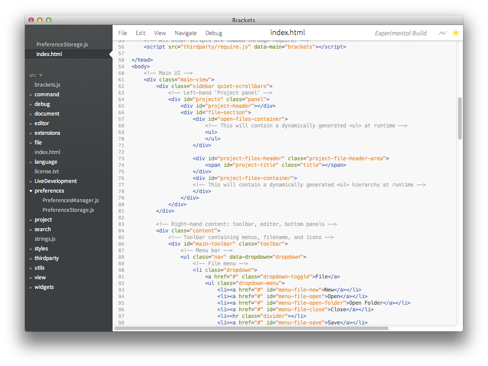
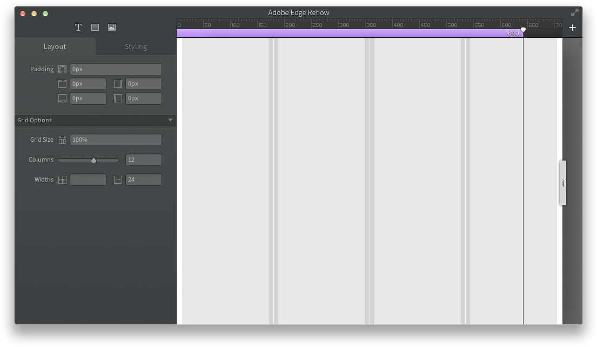

What is TopCoat?
TopCoat is the design language for Adobe's Web platform & authoring tools. It was tailored for a set of light weight applications that are based on web standards. Moving away from the powerful, monolithic apps that you launch and use for most of your day, these apps are meant to be working alongside a set of other tools and services. They can be launched on your desktop or on the browser.
TopCoat was not meant for mobile apps, web sites and services, powerful authoring tools with a lot of configuration options. And extension of TopCoat would be required for those spaces.
Our Design Principles:
- We want to be good OS Citizens while still retaining our identity.
- Our UI Framework should accelerate design, not restrict it.
- We should be able to convey human, without literally showing our heart.
- We want to be clean and simple without sacrificing being clear.
- We’d like to explore the aesthetics of being functional.
- We love our craft and it should be apparent in the quality of our UI.
Note: This style guide is not meant to be prescriptive. You shouldn't let this style guide hold you back if you've figured out a better way. Please feel free to let us know how we can improve TopCoat.
Examples
| Brackets (Edge Code) | Edge Reflow | Edge Inspect |
|---|---|---|
|  |  |
 (Chrome Extension)
(Chrome Extension)
|
Fonts
| On White | On Light Gray | On Slate Gray |
|---|---|---|
TitleStandard Text Large Text |
TitleStandard Text Large Text |
TitleStandard Text Large Text Group Label |
TopCoat uses Source Sans Pro, Adobe’s first open source type family; the fonts are included in this style guide in /assets/fonts. Right now only Regular and Semibold are being used on the controls, 12px Regular on Standard controls and 14px Semibold on Large controls.
If you're going to use text shadow or highlight on text that don't have a clickable bounding box make sure that:
- interactive text are raised (shadow below text or highlight above text)
- non-interactive text are sunken (the opposite).
Colors
Surface Palette
| Color | Name | Hex | RGB | Note |
|---|---|---|---|---|
| Slate Gray (gradient start) | #494D4E | 73,77,78 | Gradient background for global navigation or driver e.g. App Bar, Primary Side Bar, Chrome Extension | |
| Slate Gray (gradient end) | #3B3F41 | 59,63,65 | (See above.) | |
| White | #FFFFFF | 255,255,255 | Background color for Content, Settings, Windows, Dialogs | |
| Nested-White | #F8F8F8 | 248,248,248 | Background color for nested area of Content, Settings | |
| Light Gray | #DFE2E2 | 222,226,225 | Background color for HUD/Pop-over, Secondary Side Bar | |
| Nested Light Gray | #D4D7D7 | 222,226,225 | Background color for nested or sunken area of HUD/Pop-over, Secondary Side Bar |
Icons
Icons are used to:
- leverage globally understood visual concepts, or where icons usage is more conventional than text
- save space by using an easily understood symbol, where localization or text orientation is constrained
- direct the user visually and break down or differentiate elements (i.e. feature lists)
- enforce consistency within the application
- make the interface visually engaging
Visual Hierarchy
Visual hierarchy is used to indicate what is important. Primary objects or actions have the highest contrast to their surroundings.
Example: TopCoat Button Visual Hierarchy
- Call-to-Action
- Icon Label Button
- Icon Button
- Button
- Icon Label Button - Quiet
- Icon Button - Quiet
- Button - Quiet
Spacing
Example: Spacing in HUD
- Parent container padding: 15px
- Section Spacing: 10px
- Spacing within Sections: 5px
- Use spacing to convey association
- Item spacing should not be greater than container padding
Words
For Headings, Component Labels and Menu Items, capitalize all major words (nouns, verbs, adjectives, adverbs and pronouns) including the second part of hyphenated major words (e.g. Snuggle-Cake, not Snuggle-cake).
OS Wrapper vs. Browser
When TopCoat is being used in the context of an OS app, it needs to be a good OS citizen. If it reside within a browser then it should behave more like a web page.
| OS Wrapper | Browser | |
|---|---|---|
| Cursor Hovering Clickable Component | Default arrow cursor (cursor: default;) | Pointer cursor (cursor: pointer;) |
| Hover State | Not Required unless hit area isn't clear | Recommended especially if the hit area isn't clear |
Button
|
Quiet Button Disabled Quiet Button |
Quiet Button Disabled Quiet Button |
Just your average buttons.
Icon Button
Icon buttons save space, use them when labels aren't really required.
Icon Label Button
|
Icon Label Button Icon Label Button Icon Label Button Icon Label Button |
Icon Label Button Icon Label Button Icon Label Button Icon Label Button |
Use icon label buttons to call out main actions.
Call-to-Action-Button
The primary or suggested action in the workflow, there's usually only one of these on a screen.
Breadcrumbs
|
Soon |
|
- Typically appear horizontally across the top of an interface.
- They provide links back to each previous page the user navigated through to get to the current page or - in hierarchical site structures - the parent pages of the current one.
- breadcrumbs provide a trail for the user to follow back to the starting or entry point. A greater-than sign (>) serves as the hierarchical separator.
Drop-Down
- This is generally used to reveal a set of actions or navigation items. This shouldn't be used in settings or forms.
- Always opens up a fly-out surface
- Fly-out surfaces never covers the drop-down
- Clicking once on the button opens up the panel
- Once a surface is open it remains open until the user clicks outside of the surfaces
Split-Action
Link
| On White | On Light Gray | On Slate Gray |
|---|---|---|
Generally used for inline actions in Applications.
Button Bar
|
|
|
- When a button is selected, others within the group are deselected
- Should always accompanied by comprehensive and clearly distinct text
- Best used when choices should be shown, involve more than one choice, or the options can not be described as opposite
- Also used to change pages within group boxes and dialogs
Slide Switch
|
|
|
Use this as the primary on/off or binary switch.
- Should be accompanied by positive and active text
- Use to indicate binary choice, such as settings are either 'on' or 'off'
- Do not allow binary buttons to become excessive. Any more than 6 might indicate that the design should use some other method.
Toggle Buttons
| Soon | Soon |
Tabs
| Soon | Soon |
Tabs allow multiple documents or screens to be contained within an area and tabs are used to navigate between them.
Disclosure Toggle
| Soon | Soon |
Usability can be improved by only presenting the minimum data required to perform the task. We can hide additional data (advanced or extra features) by default and use the disclosure toggle to reveal them when they are needed.
Text Field
|
|
|
A text field is used to input a variable or string.
Combo Box
| Soon | Soon |
- Click arrow to reveal Menu or fly-out surface
- Combo-boxes should be scrubbable (see Scrubby Slider)
Select
|
|
|
- This is generally used for settings or forms. The selected option is always shown as opposed to the drop-down component, because of this, it should be accompanied with labels.
- Always opens up a Menu or list (never a fly-out surface)
- The menu will always cover the Select
- Clicking inside the menu will change the icon or text to reflect the current state
- Clicking outside the menu with close the menu
Swatch
| Soon | Soon |
Checkbox
- Checkboxes should always accompanied by positive and active text
- Checkboxes can be used in front of almost any other component. For example, you could enable or disable a drop-down, slider, etc. as well as be integrated into trees or menus.
Radio Button
| Soon | Soon |
- Radio buttons should always accompanied by comprehensive and clearly distinct text
- Always used in groups- one must always be selected
- When a button is selected, others within the group are deselected
Approximate Slider
|
|
|
Allows the user to roughly adjust values in a finite range.
Step / Precision Slider
| Soon | Soon |
Tags
| Soon | Soon |
Used to map content to multiple nonhierarchical categories.
Spinner
|
|
|
- Indicates indefinite progress
- Don’t lock up the UI, let the users continue with their work when progress is being made if at all possible
- Replace the button/component that triggered the action with a spinner so that the user can’t duplicate action
- If process is initiated with a button, that button should be disabled while process is ongoing
Indicator Bar
| Soon | Soon |